Yadr (Yet Another Document Reader) is used to read the popular DOC format on your Palm Handheld. Currently Yadr only supports the Doc format, but support for other formats are planned.
Yadr can read documents located in memory as well on a MMC card (only the first card detected). Other highlights of Yadr are: bookmarks and customization of fonts, colors etc.
Note! Yadr cannot be used to read Microsoft Word .doc documents on your handheld. To read Word documents use something like Documents to Go from Dataviz.
Installation of Yadr is like installing any other Palm OS program:
When the synchronization is done you will have a 'Yadr' icon in the Unfiled category on your Palm PDA. Feel free to move Yadr to another category.
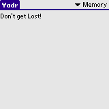Launch Yadr. Select a document to read by tapping it's name on the list. If your device supports MMC/SD cards you can switch to the card by using the drop down in the upper right corner.
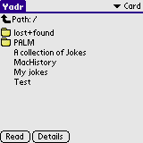If you select the Card view you will be presented with a File Explorer. Only directories and Documents will be shown. Tap on directory name to browse the directory - the full path is shown on the bottom line. Tap on the broken arrow next to the path to go up one level in the directory hierarchy. Select a document name and then tap Read to open the document.
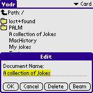Highlight a document and tap Edit. On the Edit screen you can rename the document, delete it or beam it to another device.
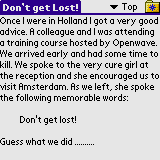When reading a document you have several options. You can add a bookmark or go to a bookmark by tapping the Folder icon in the upper right corner. You can easily jump between sections by using the drop down next to the bookmarks folder. Tapping in the upper quarter of the screen brings you to the previous page. Tapping in the second quarter of the screen scrolls one line up. Tapping the third quarter scrolls one line down and tapping the fourth quarter brings you to the next page.
Yadr can also show the document in full screen mode - this is selected in the Formatting panel. In full screen mode all interaction is done through the menu. The menu can be called up be either press the menu silk button or in the top line of the display.
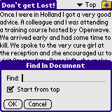By tapping the Find button on the silk screen or by selecting Find from the menu you can bring up a search dialog. Enter one or more search terms separated by whitespace and tap OK. If the search terms are found you will be brought to the location in the document. Select Find Next from the menu (or write a n in the graffiti area) to locate more matches.
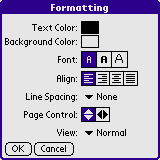On the Formatting screen you can customize the visual representation of the document. Also, the way the page control works (the quarter layout described above) can be changed - from up to down or from left to right. Furthermore you can switch between Normal and Full Screen mode.
Bookmarks are stored in a separate database and are not stored in the same file as the document. This is by design. Thus, you should open up the Bookmarks panel once in a while - this can be done from the main screen or from within a document.
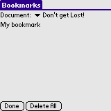Select the appropriate document by using the drop down. The bookmarks stored for this document are shown in the list. Tap Delete All to delete all bookmarks for this document. Tap Done to exit the screen. To edit or delete a single bookmark, tap the name in the bookmarks list.
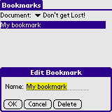Tap Delete to delete this bookmark. Tap OK when done - this will acknowledge your changes. Tap Cancel to leave the bookmark untouched.
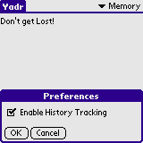History Tracking is not enabled per default. Go to the Preferences screen and enable History Tracking if needed.
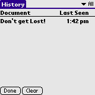Every time you open a document the history is updated. When you reach the last page of the document the status is changed from Opened to Read - use the dropdown in the upper right corner to cycle through the states. In the All view, read documents will be shown in bold. Tap Clear to delete information in the current category.
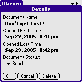Tap a document name to bring up the details about the document. Use the drop down to change the status of the document. Tap Delete to delete the details for this entry.